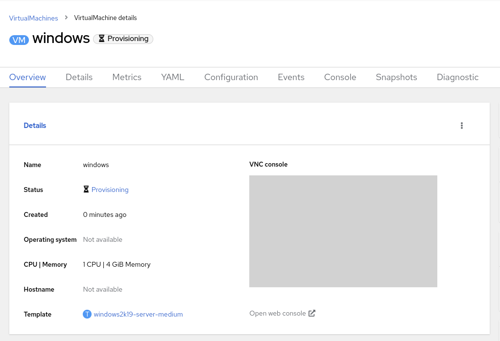

Optional: Windows Virtual Machines
This lab will introduce you to the basics of creating and managing Microsoft Windows VMs in OpenShift Virtualization. This process is very similar to creating and managing Linux-based virtual machines, be sure to return to the OpenShift Virtualization Basics module and go through the exercises for reviewing resources and configuration.
-
Create a new Windows virtual machine
-
Customize the OS using sysprep
1. Create a Windows virtual machine
In this segment, we will install Microsoft Windows Server 2019 using an ISO hosted on a web server. This represents one way to install an operating system to a virtual machine that takes advantage of the ability to source disks from many locations, including a web server, object storage, or other persistent volumes in the cluster.
This process can be streamlined after the initial operating system installation by creating a template from the virtual machine. The specific process for preparing the guest operating system to be used as a template will vary, be sure to follow your organization’s guidelines and requirements when preparing a template OS.
-
From the left menu, navigate to Virtualization → VirtualMachines:

-
It will list the VMs running in the current project.
-
Press on the top-right the button Create and select From template
-
Scroll down and select Microsoft Windows Server 2019 VM tile.

-
A dialog will appear showing the default configuration related to the template.

-
Press Customize VirtualMachine to specify the parameters to be used for the provisioning.

-
In this dialog:
-
Specify the name
windows -
Enable the checkbox Boot from CD and specify the url: http://192.168.123.100:81/Windows2019.iso
-
-
Reduce the CD disk size to 5 GiB.
-
Keep the
Disk sourcesize disk to the default value 60 GiB -
Ensure the
Mount Windows drivers diskis enabled. This is required to install Windows systems, which will provide the drivers for VirtIO. -
Press Next after filling in the parameters.

-
Switch to the Scripts tab and press Edit on the
Sysprepsection -
Fill the
autounattend.xmlform with the following code<?xml version="1.0" encoding="utf-8"?> <unattend xmlns="urn:schemas-microsoft-com:unattend" xmlns:wcm="http://schemas.microsoft.com/WMIConfig/2002/State" xmlns:xsi="http://www.w3.org/2001/XMLSchema-instance" xsi:schemaLocation="urn:schemas-microsoft-com:unattend"> <settings pass="windowsPE"> <component name="Microsoft-Windows-Setup" processorArchitecture="amd64" publicKeyToken="31bf3856ad364e35" language="neutral" versionScope="nonSxS"> <DiskConfiguration> <Disk wcm:action="add"> <CreatePartitions> <CreatePartition wcm:action="add"> <Order>1</Order> <Extend>true</Extend> <Type>Primary</Type> </CreatePartition> </CreatePartitions> <ModifyPartitions> <ModifyPartition wcm:action="add"> <Active>true</Active> <Format>NTFS</Format> <Label>System</Label> <Order>1</Order> <PartitionID>1</PartitionID> </ModifyPartition> </ModifyPartitions> <DiskID>0</DiskID> <WillWipeDisk>true</WillWipeDisk> </Disk> </DiskConfiguration> <ImageInstall> <OSImage> <InstallFrom> <MetaData wcm:action="add"> <Key>/IMAGE/NAME</Key> <Value>Windows Server 2019 SERVERSTANDARD</Value> </MetaData> </InstallFrom> <InstallTo> <DiskID>0</DiskID> <PartitionID>1</PartitionID> </InstallTo> </OSImage> </ImageInstall> <UserData> <AcceptEula>true</AcceptEula> <FullName>Administrator</FullName> <Organization>My Organization</Organization> </UserData> <EnableFirewall>false</EnableFirewall> </component> <component name="Microsoft-Windows-International-Core-WinPE" processorArchitecture="amd64" publicKeyToken="31bf3856ad364e35" language="neutral" versionScope="nonSxS"> <SetupUILanguage> <UILanguage>en-US</UILanguage> </SetupUILanguage> <InputLocale>en-US</InputLocale> <SystemLocale>en-US</SystemLocale> <UILanguage>en-US</UILanguage> <UserLocale>en-US</UserLocale> </component> </settings> <settings pass="offlineServicing"> <component name="Microsoft-Windows-LUA-Settings" processorArchitecture="amd64" publicKeyToken="31bf3856ad364e35" language="neutral" versionScope="nonSxS"> <EnableLUA>false</EnableLUA> </component> </settings> <settings pass="specialize"> <component name="Microsoft-Windows-Shell-Setup" processorArchitecture="amd64" publicKeyToken="31bf3856ad364e35" language="neutral" versionScope="nonSxS"> <AutoLogon> <Password> <Value>R3dh4t1!</Value> <PlainText>true</PlainText> </Password> <Enabled>true</Enabled> <LogonCount>999</LogonCount> <Username>Administrator</Username> </AutoLogon> <OOBE> <HideEULAPage>true</HideEULAPage> <HideLocalAccountScreen>true</HideLocalAccountScreen> <HideOnlineAccountScreens>true</HideOnlineAccountScreens> <HideWirelessSetupInOOBE>true</HideWirelessSetupInOOBE> <NetworkLocation>Work</NetworkLocation> <ProtectYourPC>3</ProtectYourPC> <SkipMachineOOBE>true</SkipMachineOOBE> </OOBE> <UserAccounts> <LocalAccounts> <LocalAccount wcm:action="add"> <Description>Local Administrator Account</Description> <DisplayName>Administrator</DisplayName> <Group>Administrators</Group> <Name>Administrator</Name> </LocalAccount> </LocalAccounts> </UserAccounts> <TimeZone>Eastern Standard Time</TimeZone> </component> </settings> <settings pass="oobeSystem"> <component name="Microsoft-Windows-International-Core" processorArchitecture="amd64" publicKeyToken="31bf3856ad364e35" language="neutral" versionScope="nonSxS"> <InputLocale>en-US</InputLocale> <SystemLocale>en-US</SystemLocale> <UILanguage>en-US</UILanguage> <UserLocale>en-US</UserLocale> </component> <component name="Microsoft-Windows-Shell-Setup" processorArchitecture="amd64" publicKeyToken="31bf3856ad364e35" language="neutral" versionScope="nonSxS"> <AutoLogon> <Password> <Value>R3dh4t1!</Value> <PlainText>true</PlainText> </Password> <Enabled>true</Enabled> <LogonCount>999</LogonCount> <Username>Administrator</Username> </AutoLogon> <OOBE> <HideEULAPage>true</HideEULAPage> <HideLocalAccountScreen>true</HideLocalAccountScreen> <HideOnlineAccountScreens>true</HideOnlineAccountScreens> <HideWirelessSetupInOOBE>true</HideWirelessSetupInOOBE> <NetworkLocation>Work</NetworkLocation> <ProtectYourPC>3</ProtectYourPC> <SkipMachineOOBE>true</SkipMachineOOBE> </OOBE> <UserAccounts> <LocalAccounts> <LocalAccount wcm:action="add"> <Description>Local Administrator Account</Description> <DisplayName>Administrator</DisplayName> <Group>Administrators</Group> <Name>Administrator</Name> </LocalAccount> </LocalAccounts> </UserAccounts> <TimeZone>Eastern Standard Time</TimeZone> </component> </settings> </unattend> -
Click Save on the dialog

-
Press Create VirtualMachine

-
The Virtual Machine will start the provisioning process by downloading the ISO image, configuring, and starting the instance.
 -
After a few minutes, the Virtual VM will be in
Runningstatus. Switch to the Console tab: Note
NoteIt is not necessary for this workshop to wait for the installation to complete. You can continue to the next module. ImportantThe VM is marked as "Not migratable" because a CD-ROM disk is attached.